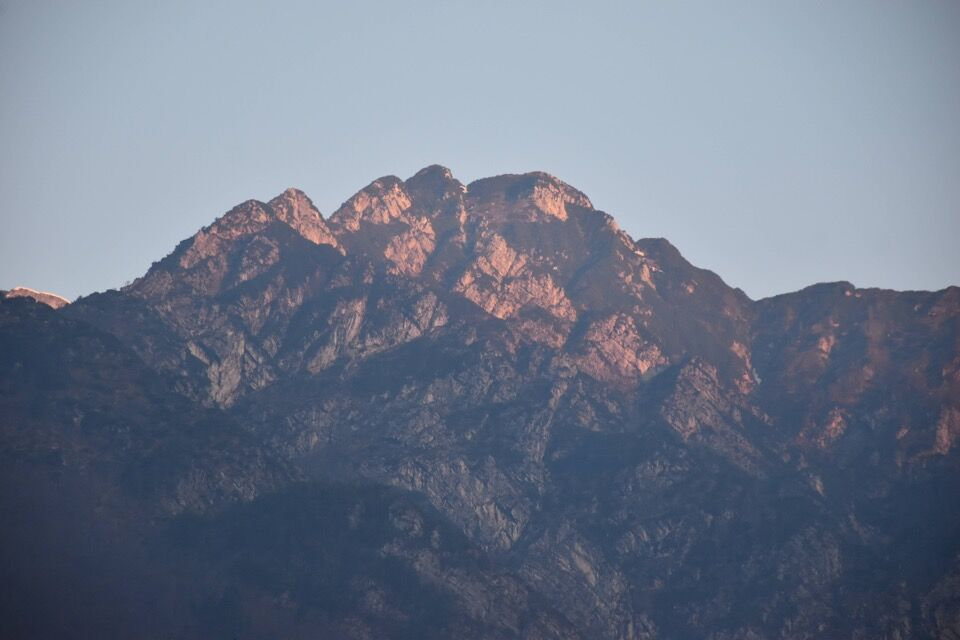
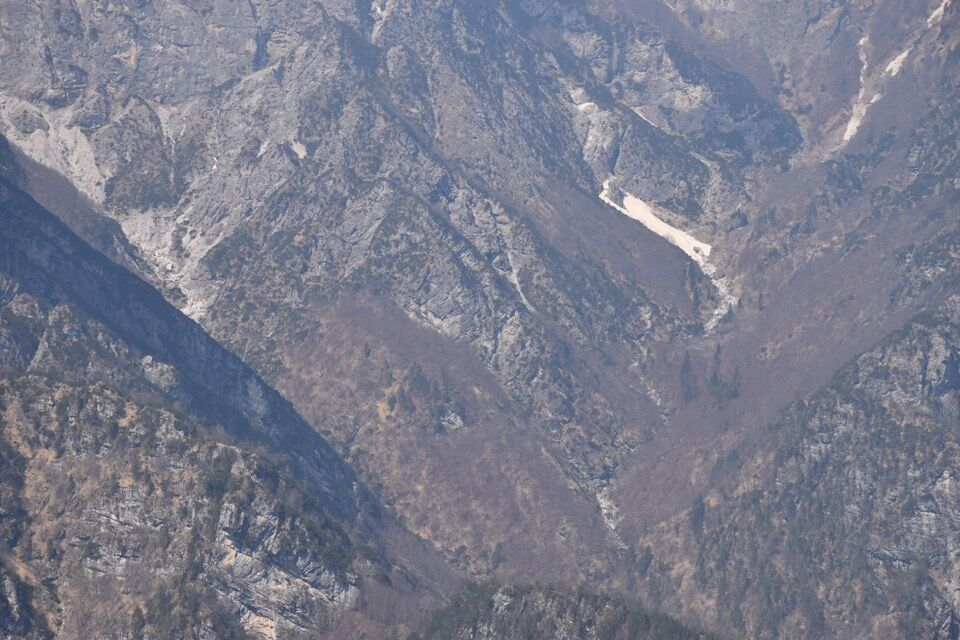

Cronaca di una escursione bestiale: ovvero come tornare a casa all'una di notte.
Sono contento però di esserci salito: lo Spiciòn è un monte massiccio (soprattutto se visto da Selva) e fra i meno frequentati del Friuli: l'ultima visita forse 12 anni fa.
Si voleva fare la traversata da Spinespes alle Tranconere, dato che i miei compagni di gita erano già stati fino all'ultima antecima dello Spiciòn, salendo per il vallone del Pòul. Mi son detto: fra fotografie, mappa CTR, esperienza e corda, riusciremo a fare quel pezzetto in discesa no? Vedremo.
Leggi questo interessante articolo sullo Spiciòn (chiamato qui Pizzòn), scritto da Mario Galli sulla rivista Alpinismo Goriziano, a proposito della via da noi seguita:
A dir la verità Mario Galli propone pure la traversata da Spinespes alle Tranconere, come scritto nel volume IV (Prealpi Carniche) della Guida del Friuli (1986):
«Dalla radura piú alta della V. della Meda, un sent. sale sotto le rocce di sinistra e aggira il versante meridionale della q. 1432 e della Forca degli Agnelli. Lungo di esso si può raggiungere — dopo diversi saliscendi — la ripida dorsale del Filòn de Tadola e proseguire fino in vetta al M. Pizzon (m 1706), dal quale per canaloni e ripide rampe erbose sul versante sud-ovest si può traversare nel vallone sotto la Forca del Poul e per questo scendere alla "Stua" nell'alta V. Silisia. Percorso riservato a persone pratiche di montagna.»
Da Selva vediamo — lontanissimo — il nostro monte all'alba. Sono contento che non si vede neve.
Saliamo a Spinespes: molto intrigante il versante sud del Corda; chissà se si riesce a salire per quel pendio a sx.
Per quelle creste ci sono passato qualche anno fa in febbraio.
È proprio il periodo giusto per osservare la bellissima e profumata Daphne Blagayana!
Prendiamo il bel sentiero che tagliando in quota il versante sud del Corda porta in val de la Meda: bello se fatto in salita, micidiale al ritorno come già una volta avevo appurato!
Laggiú il monte Tadda: non sembra poi cosí complesso no? E neppure lungo. E invece...
Bellissima la val da la Meda, da cui ero già transitato in discesa dal Corda.
Laggiú la Busa da Jeareac, luogo mitico che vorrei visitare. Peccato per il complicato accesso da Stalurban... c'è un lago in mezzo!
Il tàmer da la Meda, che la volta scorsa ingenuamente avevo mancato.
Ci affacciamo da una forcellina in versante Tadola: la faccenda non è proprio chiara...
Con stupore mi accorgo di questo sentiero che sembra traversare dalla Busa de Jeareac alla val da le Mores.
Iniziamo a travesare disagevolmente; sperin ben per il tempo.
Già solo arrivare al monte Tadda è una mezza impresa, ci abbiamo messo una vita. Siamo un po' titubanti: è troppo tardi, ma fare a ritroso questo scomodo percorso pieno di saliscendi sarebbe un incubo, per cui decidiamo di salire anche sullo Spiciòn e scendere alle Tranconere che è piú veloce.
Quanto ci vorrà a salire fin là? Un'ora? Proprio!
Comunque il monte Tadda è forse il piú bel punto di osservazione sui canali di Meduna: si ha tutto il canal dal Vuâr di fronte. Davvero una sorpresa.
Di là il lago del Ciul.
Bellissima la cresta delle Caserine; mi piace l'angolazione che fa quasi "sparire" le placconate est.
Verso il Cornagèt...
...e il Clapòn dal Vuâr.
Anche se ammetto che il motivo che piú mi spingeva a salire fin qua era questo... de gustibus.
Bando alle ciance: iniziamo a travesare verso lo Spiciòn.
Il primo tratto c'ha illuso...
Solo le bestie passano per di qua.
La quantità spaventosa di mughi e la neve in cui si affonda rendono la salita micidiale. Altro che un'ora dal monte Tadda!
L'arrivo in vetta della fortissima Luciana, dopo 8 ore di salita (sic!).
Verso il Burlatòn.
Va ben qualche foto ma qua la faccenda è seria: è tardissimo e bisogna pensare alla discesa. Laggiú l'antecima da raggiungere: poi è fatta.
Scendiamo per l'unico canale che mi sembrava possibile, peccato che in fondo ci sia un salto. Forse si poteva scendere per cengia e aggirarlo, ma il "forse" non è tanto bello dopo 8 ore di salita con le gambe a pezzi.
Con sforzo disumano torniamo su in fretta e furia e valutiamo se scendere per il pendio sud pieno di mughi: niente da fare, mughi altissimi che non ti fanno vedere a cinque metri di distanza, scendere in quelle condizioni sarebbe una autentica follia (pur avendo le foto dettagliate fatte da forcella Clautana).
Ultima speranza: scendere per una cresta affilata, piena di mughi, e poi traversare in alto il vallone del rug da lis Schialis. Inizio ad essere piuttosto agitato: se si scendesse fin giú e per qualche motivo toccasse risalire, nessuno avrebbe le forze per farlo, insomma toccherebbe passare la notte qua!
Al che... dietrofront! Non volevamo neppure pensarlo ma non c'è altra possibilità.
Ultimo saluto.

Manca un'eternità per arrivare alla macchina!
Finita? Eh no, tocca appena tornare alle Tranconere a recuperare la seconda macchina... aiuto!